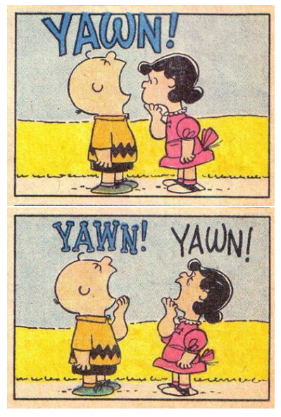

An experiment conducted by the MythBusters, a science entertainment TV program on the Discovery Channel, tested if a person can be subconsciously influenced into yawning if another person near them yawns (Season 3, Episode 28). 50 people were randomly assigned to two groups: 34 to a group where a person near them yawned (seeded) and 16 to a group where there wasn’t a person yawning near them (control). (See also Exercise 2.6.) We wish to determine if their experiment provided, as claimed on the show, significant evidence that yawning is contagious.

First Questions to Ask:
What is the research question?
What type of study is this?
What are the response and explanatory variables?
What type of variable is each of the above?
Below are the results of the experiment:
| Yawn | No Yawn | Total | |
|---|---|---|---|
| Control | 4 | 12 | 16 |
| Seeded | 10 | 24 | 34 |
| Total | 14 | 36 | 50 |
To analyse in R, load the necessary packages and the data set with one row per subject, which is stored as yawns.csv in our Class > Data folder.
library(openintro)
library(mosaic)
library(dplyr)
library(ggplot2)
library(infer)
yawns <- read.csv("~/Stats 212d F20/Class/Data/yawns.csv")Go ahead and explore the data a little. What are the variable names? Can you see the first few cases to check the data? Can you create a table called yawn_table that shows the counts from the table above?
Feel free to check the DolphinRandomization.Rmd file for helpful code.
names(________)
head(________)
yawn_table <- table(_________, _________)
yawn_tableUse the table from the last section to plot the relationship using the mosaicplot() function.
yawn_table <- table(yawns$Group, yawns$Result)
yawn_props <- prop.table(yawn_table, 1)
obs.diffinprop <- yawn_props[2,2] - yawn_props[1,2]
null_distn <- yawns %>%
specify(Result ~ Group, success = "Yawn") %>%
hypothesize(null = "independence") %>%
generate(reps = 1000, type = "permute") %>%
calculate(stat = "diff in props", order = c("Seeded", "Control")) mosaicplot(_________, color = c("lightblue", "lightgreen"),
main = "_____________")Think about the research question. How would you formulate that into a null and alternative hypothesis using words? How could you write it out using symbols like we did for the Dolphin experiment?
Pay careful attention to how you phrase the research question. It has implications to how you will write your alternative hypothesis.
First create a table of row proportions (so the rows add up to 1.0) called yawn_props. Then find the proportion of subjects who yawned in each group, and calculate the observed difference in proportions, you can call this obs.diffinprop.
# Table of proportions
yawn_props <- prop.table(__________, __)
yawn_props
# Remember to pick the correct proportion from the
# table using `[row #, col #]` after the table name.
# I'm doing seeded proportion - control proportion
obs.diffinprop <- yawn_props[__,__] - yawn_props[__,__]
obs.diffinpropDo you think this observed difference in the proportion of people who yawned would be unusual if yawns really weren’t contagious (null true)?
How could you simulate the null model using playing cards?
Create the null model for the difference in proportion of yawners. Use 1000 simulations. The code below should help:
null_distn <- __________ %>%
specify( ______ ~ ______, success = "________") %>%
hypothesize(null = "________") %>%
generate(reps = _________, type = "permute") %>%
calculate(stat = "_________", order = c("_______", "_______"))If your code is correct, you won’t see anything. Check DolphinRandomization.Rmd for help (just remember we are using a different dataset and variables with different names).
Report both a one-sided and a two-sided p-value for testing if there’s a significant difference between the seeded group and the control group.
Visualize the null model and where our observation is. And then calculate the actual value. Consider carefully which direct to use for the one tailed test.
null_distn %>%
visualize(method = "__________") +
shade_p_value(____________, direction = "_______")
null_distn %>%
get_p_value(obs_stat = _______________, direction = "_______")Alter the code above for a two-tailed test.
At the end of the episode, Jamie (the mustached one) claims it is plausible that yawning is contagious. Do you agree? Can the MythBusters claim that there is “significant” evidence that yawning is contagious? Defend your answer.
How might you have improved the design of this experiment to test the effect of yawning seeds?
Mythbusters_key.Rmd file in the Class > Ch 2 Dolphins and Yawning examples folder.